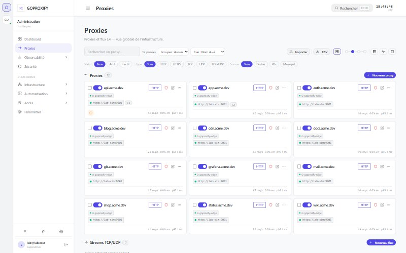
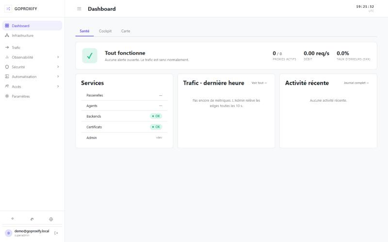

One front door. Every visitor to the right application.
GoProxify publishes your sites and services behind their own https://… addresses. The applications stay out of direct reach; you decide who comes in, through which door, and what happens when a machine fails.

What is a reverse proxy for? Publishing several sites without exposing them.
Several sites, several addresses
You run several applications or containers. Visitors open an ordinary web address for each one; they never talk to the containers directly.
One door for all of them
GoProxify receives every visit and sends it on: blog traffic goes to the blog, shop traffic to the shop, according to the rules you set.
You stay in control
From a single place you decide which sites are public, which need a login, and how to keep them available when a machine fails.
One door, rules per address
- TLS · ACME certificates
- WAF · Sentinel · rate limit
- Load balancing · health
Three roles, one binary.
The same Docker image, no runtime dependency. Each instance takes its role at startup.
| Component | Role | Keeps | Port |
|---|---|---|---|
| Admincontrol plane | Interface, API, MCP, alerting, access portal. Where you change and supervise. | SQLite | 9443 |
| GatewayEdge · data plane | Takes the traffic, terminates TLS, applies security and routes to the applications. HTTP/1.1, HTTP/2, HTTP/3, WebSocket, gRPC, TCP and UDP. | RAM + encrypted cache | 80 · 443 |
| Agentdiscovery | Watches your containers (Docker, Portainer, Kubernetes, Consul, Nomad…) and tells the gateway what is running. | volatile | 9191 |
If one goes down, only what it does itself stops.
An outage removes only what depends directly on the missing component. Nothing the service needs lives only in the Admin’s database.
What you find in the box.
Routing and certificates
One address, one site. Automatic ACME certificates, 28 DNS providers, domain delegation between gateways, load balancing and health checks.
Security
WAF (13 OWASP CRS-4 rule sets), Sentinel (behavioural bans, anti-DDoS), CrowdSec, GeoIP filtering, rate limiting, SSO, sandboxed WASM plugins (Coraza).
High availability
A second gateway takes over, failing applications are bypassed, group members sync without the Admin.
Discovery
Docker containers, Kubernetes services, Consul, Nomad, etcd or Amazon ECS instances: routes follow what starts and stops.
Observability
Live traffic, readable access logs, Prism analytics (countries, anomalies, top clients) and 10 alert channels.
Access
Secure web terminal to your machines and containers, or a standard ssh client; operators invited with only the access they need, second factor.
Automation
Rules, schedules and playbooks with human approval, built in a visual editor.
GDPR
IPs kept in full, anonymised or pseudonymised (AES-256), retention periods, right to erasure (Art. 17). Self-hosted: logs stay on your servers.
Interfaces
Admin in English, French, Spanish and German; CLI, API and an MCP server for AI clients.
The Admin, as it runs.

Get started in 5 minutes.
Choose your layout, then your method. The home lab runs Admin + Edge + Agent on one machine.
Generates hex-32 secrets, writes .env (chmod 600), checks Docker / ports, then starts Admin + Edge + Agent.
Admin UI → http://localhost:9443. Variants (run alone, never paste with the block above): bash quickstart.sh --print-secrets · bash quickstart.sh --env-only
Official GHCR images with floating :preview tag (0.x). Optional SemVer pin via versions.json.
# Click the key icon to generate secrets in your browser GPX_JWT_SECRET= GPX_PAIRING_SECRET= GPX_FIRST_ADMIN_EMAIL=admin@example.com GPX_FIRST_ADMIN_PASSWORD= # Optional — defaults work out of the box; configure further in the Admin # ADMIN_PORT=9443 # TZ=Europe/Paris # GOPROXIFY_ADMIN_TAG=preview # GOPROXIFY_EDGE_TAG=preview # GOPROXIFY_AGENT_TAG=preview
Paste the compose, then load stack.env (Advanced → Load variables from .env file) or set the same keys in Environment variables.
# Portainer — model A: secrets via stack.env
networks:
goproxify_net:
name: goproxify_net
volumes:
goproxify_admin_data:
goproxify_edge_data:
goproxify_agent_data:
services:
goproxify-admin:
image: ghcr.io/vincamok/goproxify/admin:preview
container_name: goproxify-admin
restart: unless-stopped
command: ["admin"]
environment:
- TZ=${TZ:-Europe/Paris}
- GPX_SECURITY_JWT_SECRET=${GPX_JWT_SECRET}
- GPX_PAIRING_SECRET=${GPX_PAIRING_SECRET}
- GPX_FIRST_ADMIN_EMAIL=${GPX_FIRST_ADMIN_EMAIL}
- GPX_FIRST_ADMIN_PASSWORD=${GPX_FIRST_ADMIN_PASSWORD}
- GPX_IDENTITY_EDGE_NODE_NAME=${EDGE_NODE_NAME:-goproxify-edge}
- GPX_SERVER_API_PORT=9443
ports:
- "${ADMIN_PORT:-9443}:9443"
volumes:
- goproxify_admin_data:/etc/goproxify
networks: [goproxify_net]
goproxify-edge:
image: ghcr.io/vincamok/goproxify/edge:preview
container_name: goproxify-edge
restart: unless-stopped
command: ["edge"]
environment:
- TZ=${TZ:-Europe/Paris}
- GPX_PAIRING_SECRET=${GPX_PAIRING_SECRET}
- GPX_IDENTITY_EDGE_NODE_NAME=${EDGE_NODE_NAME:-goproxify-edge}
ports:
- "${EDGE_HTTP_PORT:-80}:80"
- "${EDGE_HTTPS_PORT:-443}:443"
- "${EDGE_HTTPS_PORT:-443}:443/udp"
volumes:
- goproxify_edge_data:/etc/goproxify
networks: [goproxify_net]
depends_on: [goproxify-admin]
goproxify-agent:
image: ghcr.io/vincamok/goproxify/agent:preview
container_name: goproxify-agent
restart: unless-stopped
command: ["agent"]
environment:
- TZ=${TZ:-Europe/Paris}
- GPX_PAIRING_SECRET=${GPX_PAIRING_SECRET}
- GPX_CONTROL_PLANE_EDGE_ENDPOINT=http://goproxify-edge:8000
- GPX_CONTROL_PLANE_ADMIN_ENDPOINT=http://goproxify-admin:9443
- GPX_IDENTITY_AGENT_NODE_NAME=${AGENT_NODE_NAME:-goproxify-agent}
volumes:
- /var/run/docker.sock:/var/run/docker.sock:ro
- goproxify_agent_data:/etc/goproxify
networks: [goproxify_net]
depends_on: [goproxify-edge]
# Click the key icon to generate secrets in your browser GPX_JWT_SECRET= GPX_PAIRING_SECRET= GPX_FIRST_ADMIN_EMAIL=admin@example.com GPX_FIRST_ADMIN_PASSWORD= # Optional — defaults work out of the box; configure further in the Admin # ADMIN_PORT=9443 # TZ=Europe/Paris # EDGE_NODE_NAME=goproxify-edge # AGENT_NODE_NAME=goproxify-agent
Single paste: replace CHANGE_ME_* before Deploy. No stack.env / env file needed.
# Portainer — model B: inline secrets (no stack.env) # Click the key icon to fill CHANGE_ME_* in your browser networks: goproxify_net: name: goproxify_net volumes: goproxify_admin_data: goproxify_edge_data: goproxify_agent_data: services: goproxify-admin: image: ghcr.io/vincamok/goproxify/admin:preview container_name: goproxify-admin restart: unless-stopped command: ["admin"] environment: - TZ=Europe/Paris - GPX_SECURITY_JWT_SECRET=CHANGE_ME_JWT_HEX32 - GPX_PAIRING_SECRET=CHANGE_ME_PAIRING_HEX32 - GPX_FIRST_ADMIN_EMAIL=admin@example.com - GPX_FIRST_ADMIN_PASSWORD=CHANGE_ME_PASSWORD_MIN12 - GPX_IDENTITY_EDGE_NODE_NAME=goproxify-edge - GPX_SERVER_API_PORT=9443 ports: - "9443:9443" volumes: - goproxify_admin_data:/etc/goproxify networks: [goproxify_net] goproxify-edge: image: ghcr.io/vincamok/goproxify/edge:preview container_name: goproxify-edge restart: unless-stopped command: ["edge"] environment: - TZ=Europe/Paris - GPX_PAIRING_SECRET=CHANGE_ME_PAIRING_HEX32 - GPX_IDENTITY_EDGE_NODE_NAME=goproxify-edge ports: - "80:80" - "443:443" - "443:443/udp" volumes: - goproxify_edge_data:/etc/goproxify networks: [goproxify_net] depends_on: [goproxify-admin] goproxify-agent: image: ghcr.io/vincamok/goproxify/agent:preview container_name: goproxify-agent restart: unless-stopped command: ["agent"] environment: - TZ=Europe/Paris - GPX_PAIRING_SECRET=CHANGE_ME_PAIRING_HEX32 - GPX_CONTROL_PLANE_EDGE_ENDPOINT=http://goproxify-edge:8000 - GPX_CONTROL_PLANE_ADMIN_ENDPOINT=http://goproxify-admin:9443 - GPX_IDENTITY_AGENT_NODE_NAME=goproxify-agent volumes: - /var/run/docker.sock:/var/run/docker.sock:ro - goproxify_agent_data:/etc/goproxify networks: [goproxify_net] depends_on: [goproxify-edge]
Chart in the repo (helm/goproxify). Requires global.authToken. Generate secrets in your browser, then helm install.
# Click the key icon — secrets stay in your browser fullnameOverride: goproxify global: authToken: "" timezone: Europe/Paris admin: image: tag: "preview" config: jwtSecret: "" ingress: enabled: true host: admin.example.com edge: image: tag: "preview" agent: image: tag: "preview"
One role per machine, same images. Use the same GPX_PAIRING_SECRET everywhere and open port 8000 between machines (firewall: only from your own hosts).
1. Admin + Gateway 1
On the first machine, follow the Home lab method (Script or Docker Compose): it starts the Admin and the first Edge.
2. Second Edge
On a second machine, run an Edge with its own node name, then register it in the Admin (Infrastructure → Edit architecture): it goes from declared to online.
services:
goproxify-edge:
image: ghcr.io/vincamok/goproxify/edge:preview
container_name: goproxify-edge
restart: unless-stopped
command: ["edge"]
environment:
- GPX_PAIRING_SECRET=<same as the Admin>
- GPX_IDENTITY_EDGE_NODE_NAME=edge-2
ports:
- "80:80"
- "443:443"
- "443:443/udp"
- "8000:8000"
volumes:
- edge2_data:/etc/goproxify
volumes:
edge2_data:
3. One Agent per host
On each internal host, run an Agent that points to an Edge. Give every Agent a unique node name, then approve it in the Admin (Agents menu).
services:
goproxify-agent:
image: ghcr.io/vincamok/goproxify/agent:preview
container_name: goproxify-agent
restart: unless-stopped
command: ["agent"]
environment:
- GPX_PAIRING_SECRET=<same as the Admin>
- GPX_CONTROL_PLANE_EDGE_ENDPOINT=http://<edge-ip>:8000
- GPX_CONTROL_PLANE_ADMIN_ENDPOINT=http://<admin-ip>:9443
- GPX_IDENTITY_AGENT_NODE_NAME=agent-host-1
volumes:
- /var/run/docker.sock:/var/run/docker.sock:ro
- agent_data:/etc/goproxify
volumes:
agent_data:
Tip: the architecture assistant in the Admin generates these steps, with a QR code, for each machine.
10 alert channels
Each alert rule can notify multiple teams on multiple channels at once. Alertmanager-inspired model.
Tech stack
Deliberate choices. No heavy framework, no hidden runtime — just Go and proven libraries.
| Component | Role | Used in |
|---|---|---|
| Go 1.25 | Single static binary, zero runtime to install, native cross-compilation | Admin · Edge · Agent |
| HTTP/3 QUIC | UDP transport via quic-go. Automatic Alt-Svc, 0-RTT, lower latency on degraded networks | Edge |
| SQLite (CGO-free) | Persistance without C deps. Cross-platform binary. Optional Raft cluster (3 nodes) for Admin HA | Admin |
| WebSocket control plane | Persistent Admin↔Edge and Agent↔Edge tunnels. full_sync, live metrics for adaptive LB, inter-Edge gateway | Admin · Edge · Agent |
| mTLS L4 tunnel | Edge↔Edge encrypted L4 channel — pool of peers, automatic failover, CONNECT-like protocol over TLS 1.3 | Edge |
| Cache AES-256-GCM | Encrypted routes & certs on disk. Edge starts autonomously even if Admin is unreachable | Edge |
| Prometheus | /metrics endpoint on every component — drop-in Grafana integration | Admin · Edge · Agent |
| OpenTelemetry | Distributed request tracing. Configurable OTLP exporters (Jaeger, Tempo…) | Edge · Admin |
| Docker Engine API | Read-only via docker.sock. Real-time container events (start/stop/update) | Agent |
| Service directories | Kubernetes, Portainer, Consul, Nomad, etcd v3 and Amazon ECS — same options as Docker labels; an unreachable directory never removes a route | Agent |
| WebAssembly (wazero) | Sandboxed plugins on requests, bodies and TCP/UDP streams, without CGO. Signed packages, plugin repositories, Coraza (SecLang) bundled | Edge · Admin |
| JWT + PAT | UI session (JWT). User API tokens gpx_pat_* with scopes for REST & MCP. Separate Edge/Agent pairing tokens | Admin |
| MCP | Model Context Protocol (JSON-RPC + SSE). 30+ tools: proxies, certs, domains, snippets, alerts, auth providers, logs, audit… PAT required — Claude Desktop / Cursor ready | Admin |
| ACME DNS-01 | Automatic wildcard certs via OVH, Cloudflare, Gandi, Route53, Hetzner and 28 more DNS providers (libdns) | Admin → Edge |
| Certificate Hub | ACME monitor (expiry dashboard + alerts), external cert import (PEM), deploy targets (webhook HMAC / ssh_exec), pull tokens in 7 formats (PEM / DER / PKCS#12 / JSON) | Admin |
| Internal CA | Self-signed internal root CA (ECDSA P-256), server/client certificate issuance for internal services — outside ACME | Admin |
Documentation
Guides, API contract, MCP server and version tracking — all in the repo.